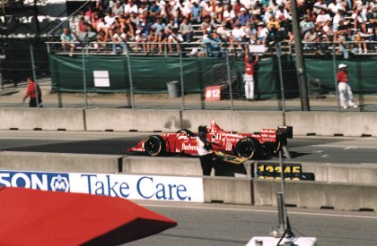
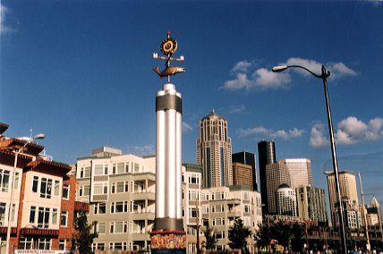
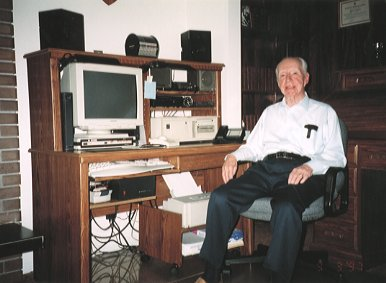
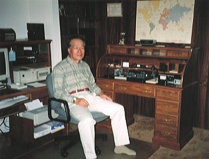
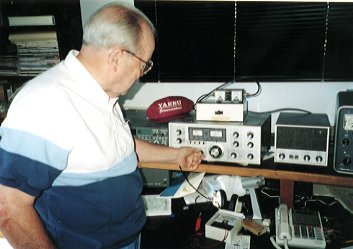
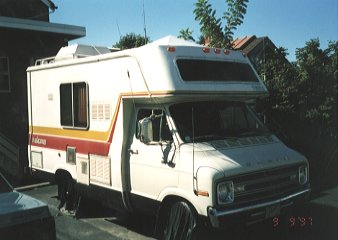
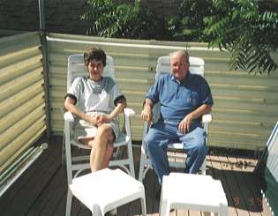
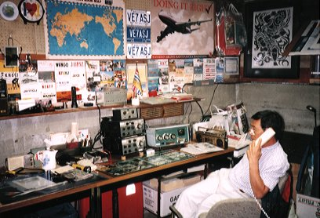
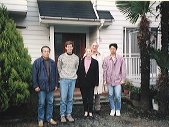

 |
Vancouver GP 1997・写真集 |
 |
Seattle & San Francisco |


|
【３年ぶりのカナダ】
8月28日から9月10日の日程で、3年ぶりにカナダ・バンクーバーに出かけてきました。
今回の目的は、8月29日～31日にバンクーバーの市街地コースで行われる自動車レースのINDY-CART・第15戦、Vancouver GPの観戦と、
その後のアメリカ・サンフランシスコ訪問でした。   VE7ZQ・Harry（左） & 彼のシャックでくつろぐ"VE7RJU"
【カナダの各局を訪問】
今回、バンクーバーでアイボールQSOした局は、滞在先のVE7ZQはじめ、VE7ZL、VE7ASJ、VE7CPW、VE7MKRの各局です。
1992年にCY7Jの6ｍ特別局でモービル運用に同行したときの仲間（と言っても年齢的には、
大先輩がほとんどですが＝移動運用「CY7J DX Pedi」の項参照）です。  このためではないと思いますが、最新のRIGを使っている局は少なく、 特にカナダでは"古い"RIGを大事に使っている局が多いように見受けられました。 VE7ASJのドレーク・ラインとヒースキットのリニヤー・アンプや、VE7ZLの八重洲無線のFT-400なども、 まだ現役で働いていて目を引きました。 日本の様に新品のRIGが手軽に買える国と違って、ハムショップがほとんど無いところなので、 品物を見てから購入するといった事が出来ないのです。 2mのハンディー機はパソコンなどを売っている小さな電気店でも扱っている様でしたが、固定局用となると"注文購入"となり、 製品の情報も雑誌などから得るだけのようです。
VE7ZL・Ralfは、CY7Jの移動運用のときに自分で改造した大型キャンピング・カー（モーター・ホーム）を提供してくれましたが、
現在は中型のキャンピング・カーに買い換えていました。   "趣味"はキャンピング・カー改装？ テラスで奥さんとくつろぐVE7ZL・Ralf
 カナダ航空にお勤めの、VE7ASJ・笹治さんとは、VE7ZQに次いで永いおつき合いをしている局です。 日本では以前にJA3AJFでQRVしていたこともあります。 現在はバンクーバー市内の閑静な住宅地に、3エＬのトライバンダーを上げて、JAとのQSOを楽しんでいます。二人のお子さんは、それぞれ独立して家を出ているので、現在は奥さんと二人暮し。 息子さんのVE7YSA（Duke）は現在、日本で生活しています。 RIGは真空管式のドレークライン。このRIGでも十分実用になるので、新しいものに変更するつもりはないとか。
○VE7CPW/VE7MRK（Tony & Mark）
VE7CPW(Tony)、VE7MRK(Mark)親子はノース・バンクーバーの小高い山の中腹の高級住宅地に住んでいます。
この場所から見下ろす夜のバンクーバー市街地とスタンレーパークの眺望は絶品です。
息子さんのVE7MKR・MarkはUBC（州立ブリティシュ・コロンビア大学）の医学部に通う学生。
 VE7CPW・Tonyさん親子。中央はお嬢さんのPam (写真は1994年に来日したときのもの)>
【 INDY-CARTを楽しむ】 今回のカナダ行きのメインはCARTの観戦でした。バンクーバーGPの観戦は今年で4回目になります。 今回も予選から決勝まで、3日間通い詰め、迫力あるフォーミュラー・カーのエキゾースト・ノートにドップリ浸かってきました。 市街地の中心部を3日間閉鎖してサーキットにしてしまうCARTは、バンクーバーの年中行事になっています。
|
 |
Vancouver GP 1997・写真集 |
|
Seattle & San Francisco |